Simple Step-by-Step User Guide and Workflow Playbook for Construction Site Operations, Heavy Machinery, Daily Attendance, Automated Payroll, and DewaterCAD Engineering.
Company: Dewatering Construction Etc. Limited (DCEL)
Document Type: Non-Technical Screen Directory & Menu Guide
For: All Office Staff, Site Supervisors, Engineers, and Managers
DCEL Office Suite organizes all company tools into 9 clear departments located in the sidebar menu on the left side of your screen.
┌─────────────────────────────────────────────────────────────┐
│ 🏠 Dashboard ➔ Your daily overview and task list │
│ 🏢 Clients ➔ Client profiles, contacts, and hours │
│ 💬 Communication ➔ Tasks, chat, reminders, and minutes │
│ 🛠️ Tools ➔ Dewatering calculators & simulators │
│ 👥 HR ➔ Staff directory, attendance & leaves │
│ 📦 Operations ➔ Equipment, diesel, waybills & repairs │
│ 💰 Accounts ➔ Invoices, payroll, expenses & budget │
│ 📁 Reports ➔ Summary sheets and printable exports │
│ ⚙️ Settings ➔ Users, passwords, and system rules │
└─────────────────────────────────────────────────────────────┘
⇥) at the top left./tasks/dashboard): See your active tasks, urgent company reminders, and quick progress numbers for the week./client-360): View a client’s full profile—their active construction sites, machines currently working for them, and payment status./clients/phonebook): Company contact directory. You can search phone numbers or take a picture of a paper business card to automatically save the contact./operations/machine-reconciliation): Compare the machine hours logged on site with the hours approved by the client for billing./operations/site-analytics): Simple charts showing which equipment is working, which is idle, and how much diesel each site is using./tasks): See all your assigned jobs in a List or Board view. Add comments, attach photos, and check off completed subtasks./tasks/reminders): Set pop-up reminders for yourself or your team so important deadlines are never forgotten./comm-log): Keep a record of letters, approvals, and emails sent to or received from clients and government agencies./daily-journal): A daily work diary for site supervisors to record what was done today, what went well, and what was delayed./minutes): Type up meeting notes, assign action items to attendees, and sign digitally right on screen./operations/site-requests): Site engineers can request urgent cash, tools, diesel, or spare parts from the head office./operations/simulator): Draw or upload a site drawing, trace your excavation pit, and let the software place dewatering pumps, pipes, and hoses for you./operations/dewatering-calculator): Quickly calculate water flow rates, required pump capacity, and water drawdown./operations/estimator): Calculate truck haulage, mobilization costs, and fuel needed before quoting a job./operations/vat-calculator): A quick calculator for 7.5% VAT and 5% Withholding Tax on quotes and invoices./hr-dashboard): At-a-glance staff count, today’s attendance rate, who is on leave, and hospital insurance status./attendance): Mark daily site registers for day and night shifts, Sunday work, and overtime hours./employees): Staff list with photos, phone numbers, emergency contacts, job titles, and bank account numbers./onboarding): Register new employees, automatically generate their employment contracts, and handle exit clearances./leaves): Apply for annual holiday, sick leave, or emergency leave, and view your remaining vacation days./salary-loans): Apply for short-term salary advances and track monthly repayments./hmo): Check health insurance hospital lists and register spouses and children for company medical cover./evaluations): Complete bi-annual employee performance reviews./interviews): Manage job applicants and drag-and-drop resumes for automatic reading./performance-conduct): Keep records of formal employee queries, warnings, and positive commendations./operations): Summary of where all company equipment is currently working./operations/assets): Complete catalog of pumps, generators, pipes, and tools with QR codes and location tags./operations/waybills): Create delivery waybills when moving machines or pipes to a site, complete with driver names and signatures./operations/checkout): Scan a tool barcode to borrow it for site work./operations/maintenance): Track machine oil changes, servicing schedules, and breakdown repairs./operations/diesel): Log fuel tanker deliveries into storage tanks and daily liters poured into generators and pumps./operations/vehicles): Check truck and pickup roadworthiness dates, insurance renewals, and driver assignments./operations/sites): List of all active and completed project sites./client-accounts): Create and send client invoices for machine rentals and dewatering jobs; log client bank transfers./payroll): Automatically calculate monthly salaries based on attendance, overtime, tax, and pension, then print payslips./beneficiaries): Pay casual site labor, temporary workers, and suppliers who are not on monthly salaries./ledger): Company cash flow records, official income, and daily site expenses with receipt photos./bank-import): Upload your bank statement PDF to automatically match payments against client invoices./vendor-invoices): Record supplier bills for parts, filters, and safety gear awaiting payment approval./budget): Track department spending limits against actual spending so projects stay on budget./reports): Printable attendance summaries, staff lists, and leave balances./financial-reports): Revenue by site, overdue client invoices, and tax schedules./tasks/reports): See how fast tasks are being completed across departments./weekly-report): A clean summary for directors every Monday morning covering sites, hours, diesel, and money./users): Manage login accounts and control which screens each staff member can see./settings): Company official address, current tax rates, and default monthly workdays./activity-log): A history log showing who created, edited, or deleted records.Company: Dewatering Construction Etc. Limited (DCEL)
Who is this for? Every employee using the app on a phone, laptop, or office PC
You can access DCEL Office Suite in three simple ways depending on where you are working:
https://dcel.office.com).When you open the app, you will see the Sign In screen.
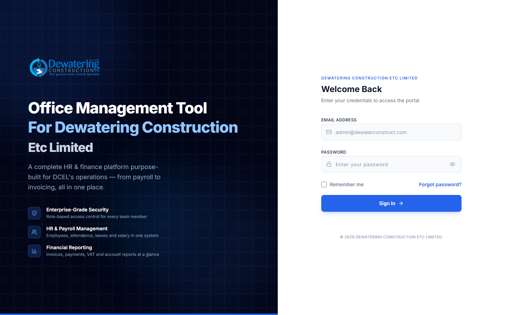
Forgot Your Password?
Click "Forgot your password?" on the login screen, enter your email address, and check your inbox for a reset link. If you do not receive it within 5 minutes, ask your HR manager to issue a temporary password for you.
Once logged in, the screen is laid out cleanly so you never feel lost:
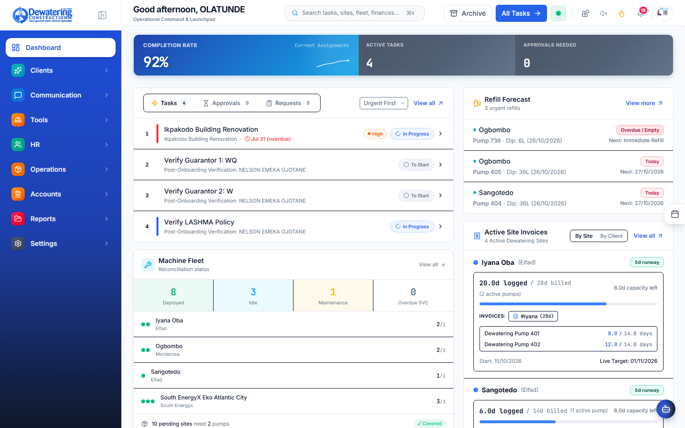
┌─────────────────────────────────────────────────────────────────────────────┐
│ [DCEL Logo] [ 🔍 Search Ctrl+/ ] [ 🌙 Night Mode ] [ 👤 Profile ] │
├───────────────┬─────────────────────────────────────────────────────────────┤
│ DEPARTMENTS │ WHERE YOU ARE: Home > Human Resources > Daily Attendance │
│ ├─────────────────────────────────────────────────────────────┤
│ 🏠 Dashboard │ │
│ 🏢 Clients │ [ + Mark Attendance ] Date: [ Today, Oct 27, 2026 ] │
│ 💬 Comms │ │
│ 🛠️ Tools │ Worker Name | Shift | Present | Site Location │
│ 👥 HR │ ──────────────────┼───────┼─────────┼─────────────────── │
│ 📦 Operations │ Musa Ibrahim | Day | [x] Yes | Eko Atlantic Site │
│ 💰 Accounts │ Chinedu Eze | Night | [x] Yes | Dangote Site │
│ 📁 Reports │ │
│ ⚙️ Settings │ │
└───────────────┴─────────────────────────────────────────────────────────────┘
Ctrl + /): Instantly find any worker, tool, site, or invoice by typing a name or number.Home > Operations > Equipment). You can click any word in that line to jump back.Company: Dewatering Construction Etc. Limited (DCEL)
Who is this for? Site Foremen, HR Officers, Department Managers, and All Employees
Where to go: In the left menu, click HR ➔ Daily Register (/attendance)
The Daily Register records which workers were on duty each day. The system uses this exact information at the end of the month to calculate salaries and overtime pay.
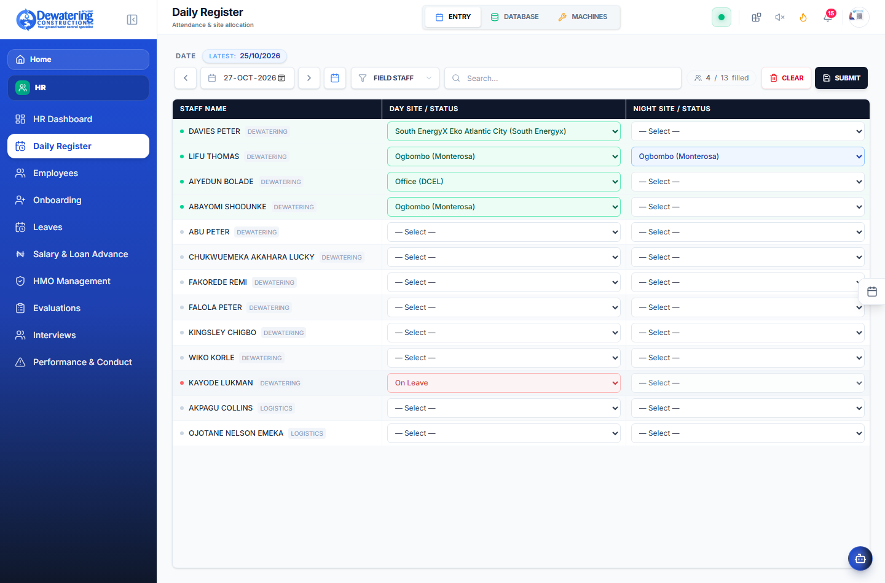
Where to go: In the left menu, click HR ➔ Employees (/employees)
Need to call a technician, check an emergency contact, or look up bank details?
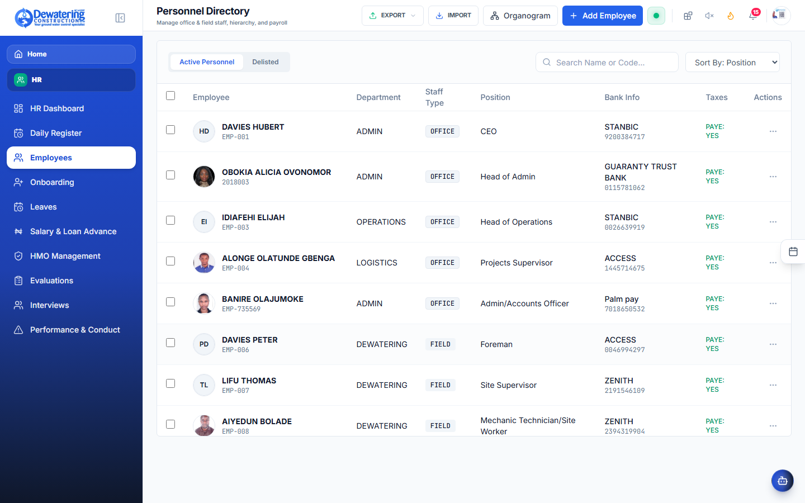
Where to go: In the left menu, click HR ➔ Onboarding (/onboarding)
When a new engineer, mechanic, or site technician joins the company:
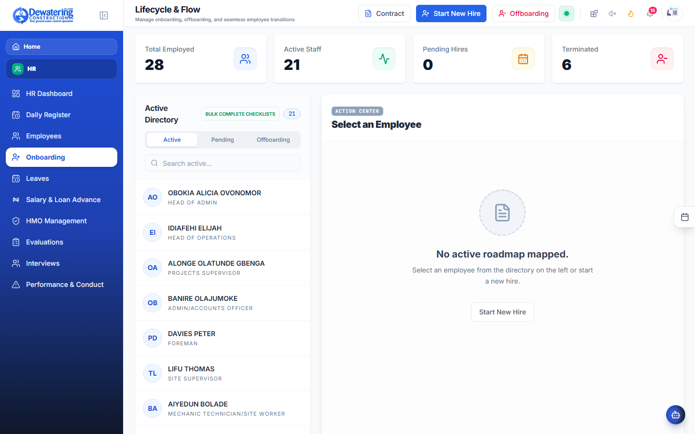
Where to go: In the left menu, click HR ➔ Leaves (/leaves)
Every full-time staff member is entitled to annual paid leave, plus sick leave and emergency leave when needed.
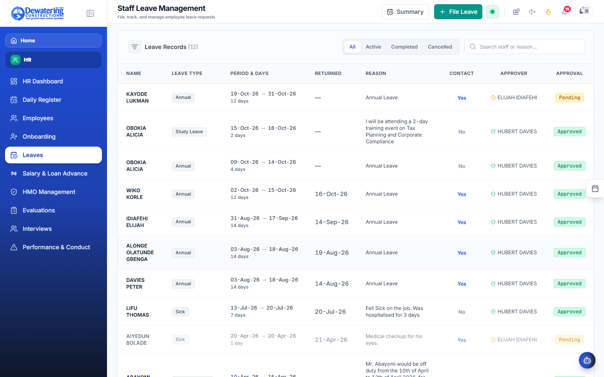
Clicking + File Leave opens the official DCEL Staff Leave Application Form:
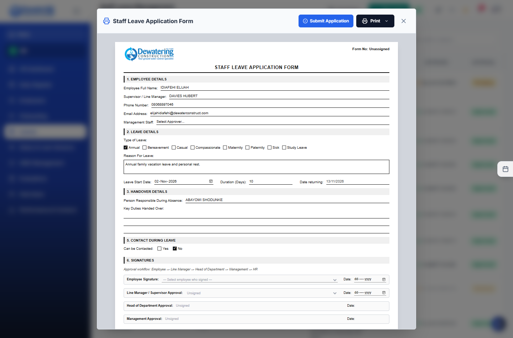
Where to go: In the left menu, click HR ➔ Salary & Loans (/salary-loans)
If an employee needs an emergency advance or personal loan from the company:
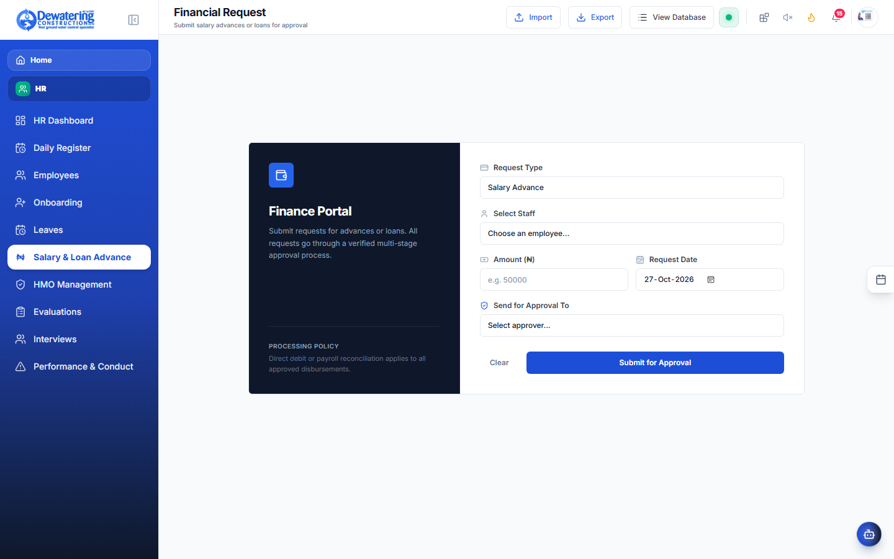
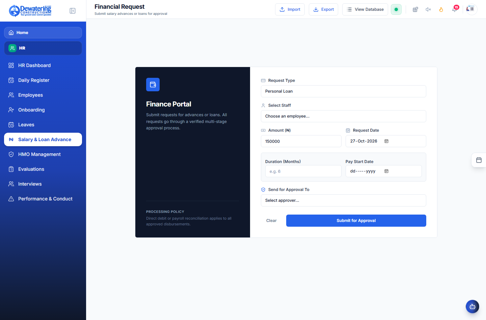
Where to go: In the left menu, click HR ➔ HMO Management (/hmo)
Dewatering Construction Etc. Limited provides health insurance for staff and their families.
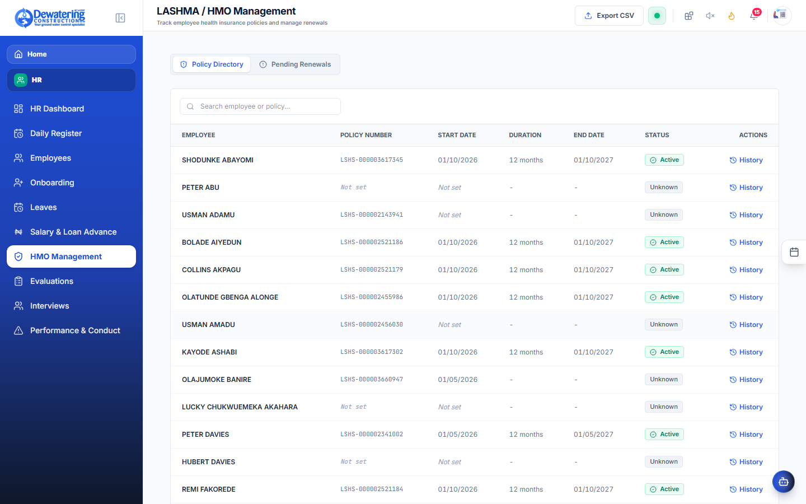
Where to go: In the left menu, click HR ➔ Interviews (/interviews)
When hiring new site engineers or technicians:
Company: Dewatering Construction Etc. Limited (DCEL)
Who is this for? Accountants, Billing Officers, Site Supervisors submitting expenses, and Staff checking their payslips
Where to go: In the left menu, click Accounts ➔ Payroll (/payroll)
The payroll system in DCEL Office Suite does all the math automatically at the end of every month. It combines employee salary agreements with daily attendance records.
[ Base Salary (pro-rated by days worked) ]
+ [ Allowances: Housing, Transport, Utility ]
+ [ Overtime Earnings (Sunday shifts & extra hours) ]
─────────────────────────────────────────────────────────────
= GROSS EARNINGS
- [ Pension Savings (8% saved for your retirement) ]
- [ PAYE Income Tax (Official government tax deduction) ]
- [ Loan Deductions (Monthly repayment on salary advance) ]
─────────────────────────────────────────────────────────────
= FINAL NET SALARY (Cash deposited to your bank account)
For Accounts Officers and HR Managers:
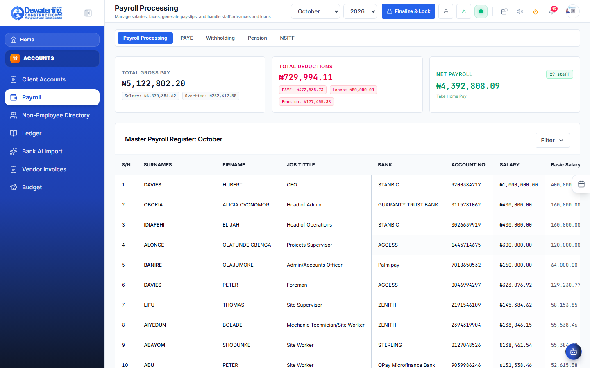
┌────────────────────────────────────────────────────────────────────────────────────────┐
│ MONTHLY PAYROLL WIZARD — October 2026 │
├────────────────────────────────────────────────────────────────────────────────────────┤
│ Official Working Days: [ 22 ] Overtime Rate: [ 1.5x Daily Rate ] │
├────────────────────────────────────────────────────────────────────────────────────────┤
│ Employee Name │ Days │ Base Pay │ Allowances │ Overtime │ Deductions│ Net Pay (₦)│
├──────────────────┼──────┼─────────────┼────────────┼──────────┼───────────┼────────────┤
│ Ibrahim Musa │ 22 │ ₦250,000.00 │ ₦120,000 │ ₦18,500 │ ₦63,100 │ ₦325,400.00│
│ Samuel Okon │ 20 │ ₦180,000.00 │ ₦80,000 │ ₦0 │ ₦38,800 │ ₦221,200.00│
│ Chinedu Eze │ 22 │ ₦300,000.00 │ ₦150,000 │ ₦42,000 │ ₦93,200 │ ₦398,800.00│
├──────────────────┴──────┴─────────────┴────────────┴──────────┴───────────┴────────────┤
│ TOTAL MONTHLY SALARY OUTFLOW: ₦ 14,850,200.00 [ Approve & Issue Payslips ] │
└────────────────────────────────────────────────────────────────────────────────────────┘
Where to go: In the left menu, click Accounts ➔ Client Accounts (/client-accounts)
When billing a client for dewatering contracts, pump rentals, or generator hire:
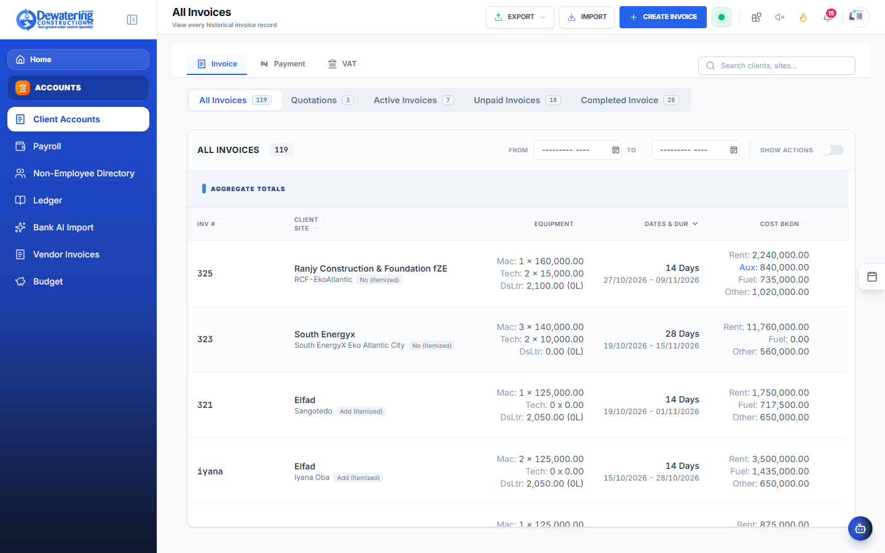
When a client transfers money for an invoice:
Where to go: In the left menu, click Accounts ➔ Non-Employee Directory (/beneficiaries)
Construction sites frequently hire temporary daily laborers, welders, or haulage truck drivers who are not full-time employees:
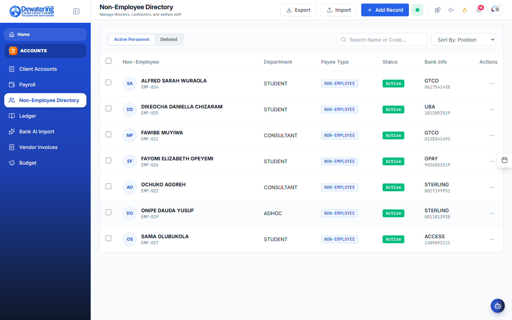
Where to go: In the left menu, click Accounts ➔ General Ledger (/ledger)
When a site engineer buys spare bolts, motor oil, or emergency diesel on site:
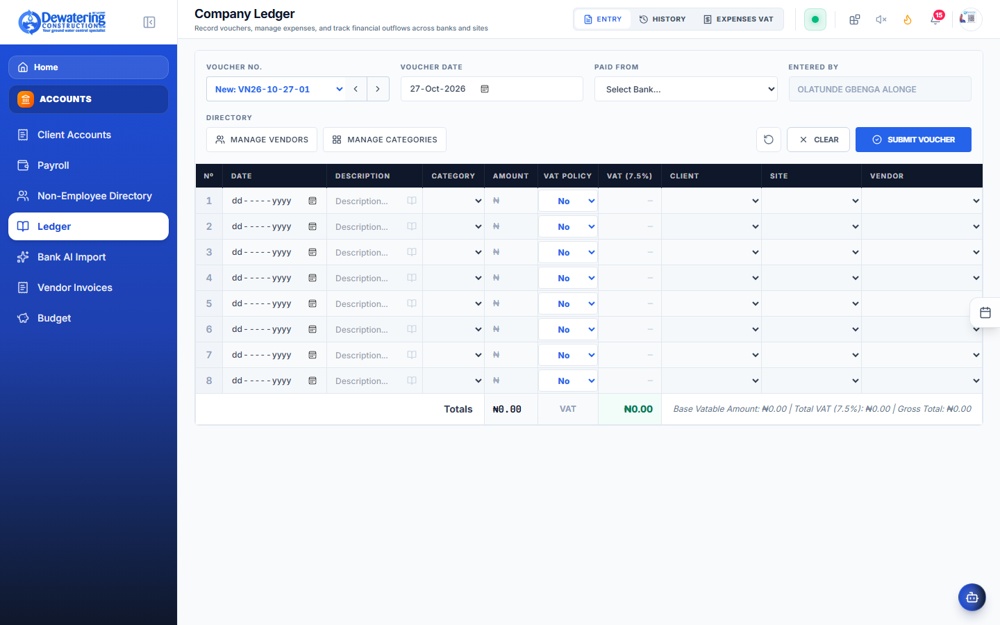
Where to go: In the left menu, click Accounts ➔ Bank AI Import (/bank-import)
Instead of matching dozens of bank transactions by hand:
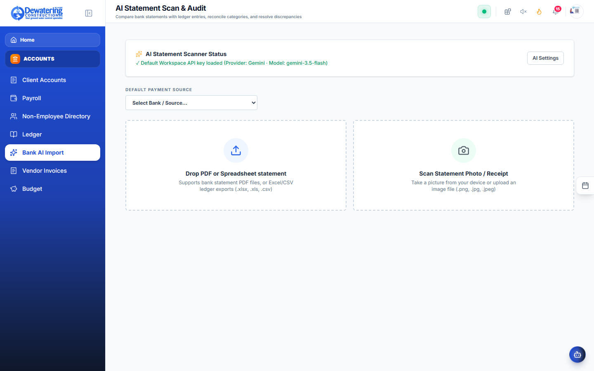
Company: Dewatering Construction Etc. Limited (DCEL)
Who is this for? Yard Foremen, Site Supervisors, Logistics Officers, Mechanics, and Drivers
Where to go: In the left menu, click Operations ➔ Inventory (/operations/assets)
Need to know where 6-inch vacuum pump #3 is, or check if an extra 150kVA generator is available in the yard?
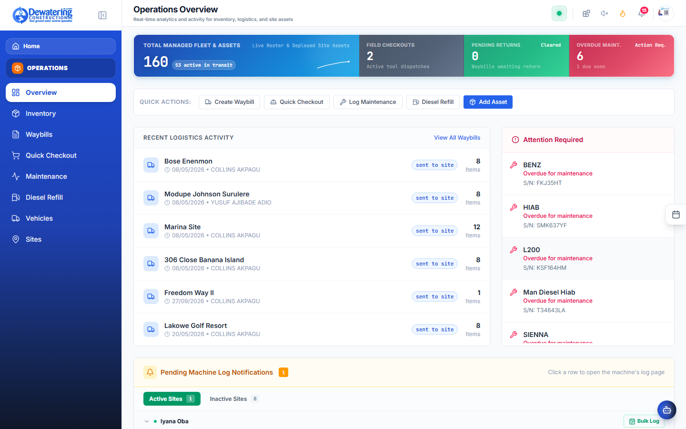
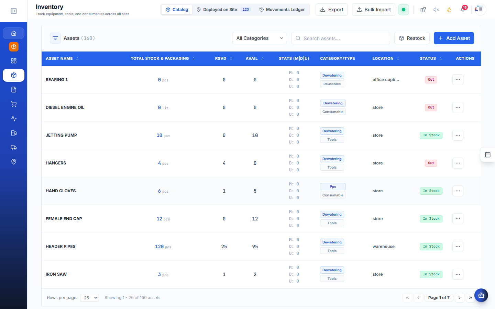
┌────────────────────────────────────────────────────────────────────────────────────────┐
│ MACHINERY & EQUIPMENT INVENTORY │
├───────────────┬─────────────────────────┬───────────────┬──────────────┬───────────────┤
│ Asset Tag │ Machine Description │ Status │ Location │ Service Due │
├───────────────┼─────────────────────────┼───────────────┼──────────────┼───────────────┤
│ DCEL-PMP-001 │ 6" Sykes Vacuum Pump │ Active on Site│ Eko Atlantic │ In 120 Hours │
│ DCEL-PMP-004 │ 6" Godwin CD150M Diesel │ In Yard/Ready │ Central Yard │ Ready │
│ DCEL-GEN-002 │ 150kVA Perkins GenSet │ Active on Site│ Dangote Ref. │ In 45 Hours │
│ DCEL-JET-003 │ High-Pressure Jet Pump │ In Workshop │ Yard Workshop│ Under Repair │
└───────────────┴─────────────────────────┴───────────────┴──────────────┴───────────────┘
PMP-001) or equipment type into the search bar.Where to go: In the left menu, click Operations ➔ Waybills (/operations/waybills)
Whenever heavy machinery, pipes, suction hoses, or fuel drums leave the central yard for a construction site, you must create an official Transit Waybill.
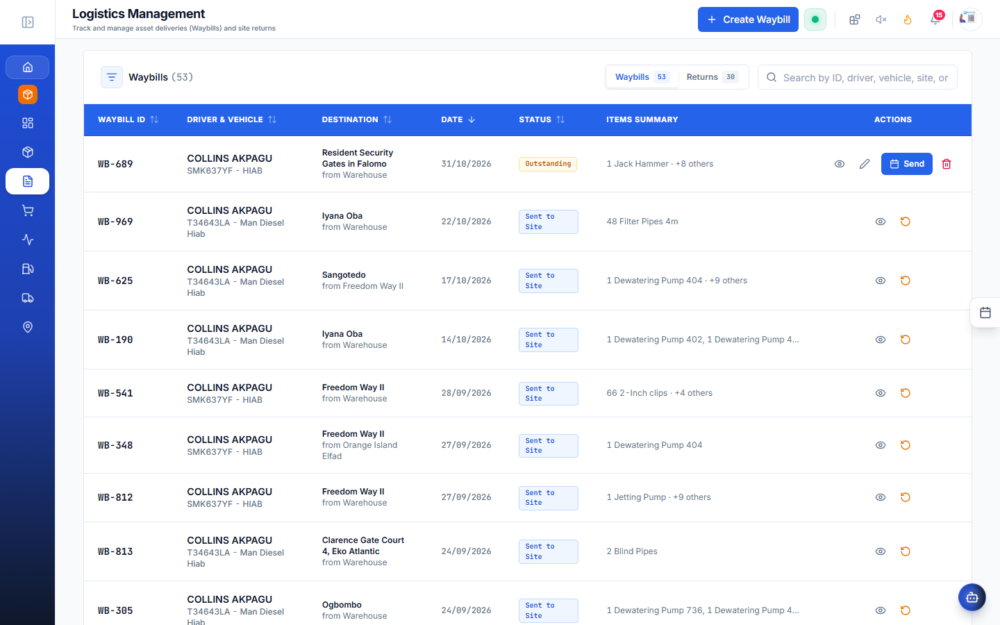
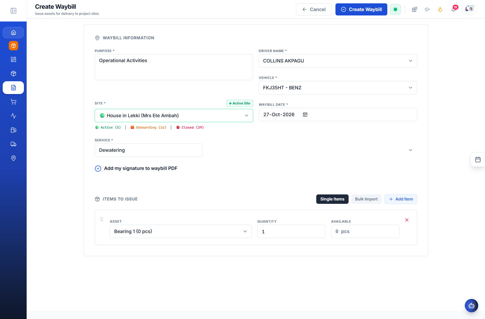
Where to go: In the left menu, click Operations ➔ Quick Checkout (/operations/checkout)
When a technician needs a pipe wrench, safety harness, angle grinder, or pressure gauge:
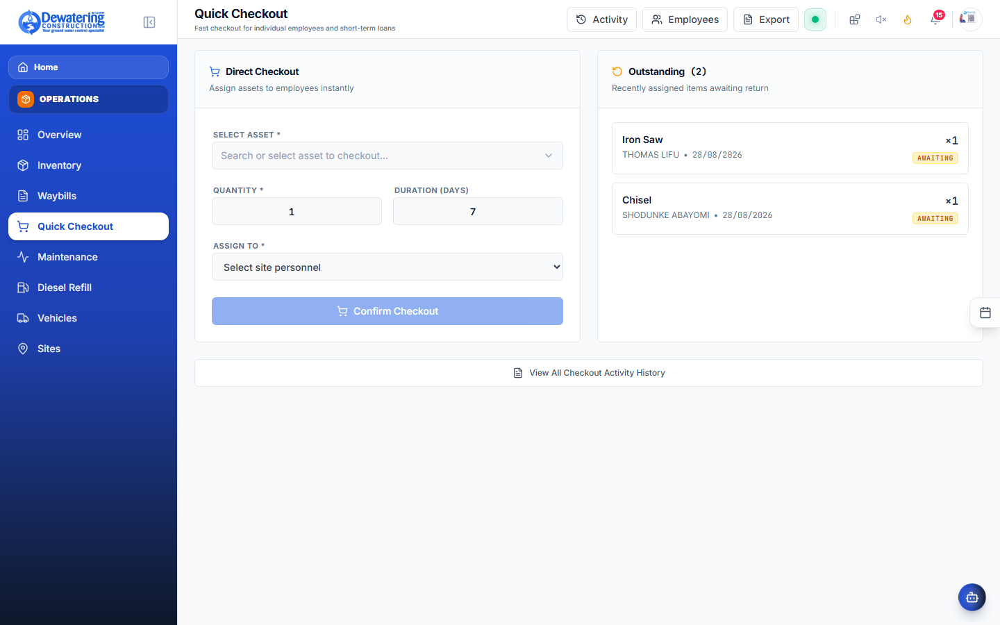
Where to go: In the left menu, click Operations ➔ Maintenance (/operations/maintenance)
Dewatering pumps and generators run 24 hours a day. Missing an oil change causes catastrophic engine failure.
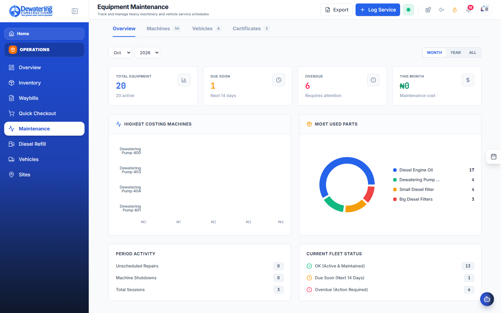
Where to go: In the left menu, click Operations ➔ Diesel Refill (/operations/diesel)
Diesel is the biggest daily cost on construction sites. Supervisors must record fuel usage every morning.
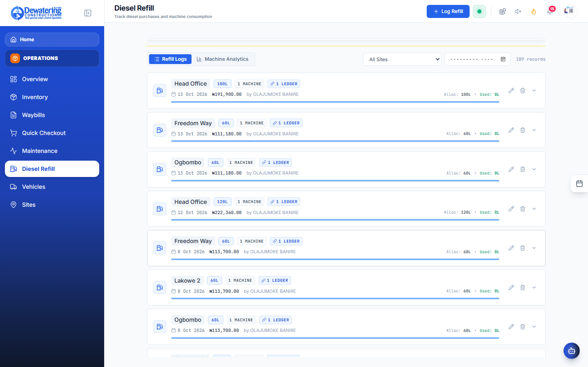
┌─────────────────────────────────────────────────────────────┐
│ DAILY DIESEL & HOURS LOG │
├─────────────────────────────────────────────────────────────┤
│ Site: [ Eko Atlantic Site ▼ ] │
│ Equipment: [ DCEL-PMP-001 (6" Sykes Pump) ▼ ] │
│ Date: [ Today, Oct 27, 2026 ] │
│ │
│ Hours Run Today: [ 24 Hours ] │
│ Diesel Added Today: [ 180 Liters ] │
│ Meter Reading: [ 3,420 Hours ] │
│ │
│ [ Save Fuel Entry ] │
└─────────────────────────────────────────────────────────────┘
High Fuel Warning: The system automatically checks how many liters the machine burned per hour. If a 6-inch pump normally burns 7.5 Liters/Hour and suddenly logs 14 Liters/Hour, the screen shows a yellow warning to alert the supervisor to check for fuel leaks or theft.
Where to go: In the left menu, click Operations ➔ Vehicles (/operations/vehicles)
Keep company pickups, haulage trucks, and staff buses roadworthy and compliant:
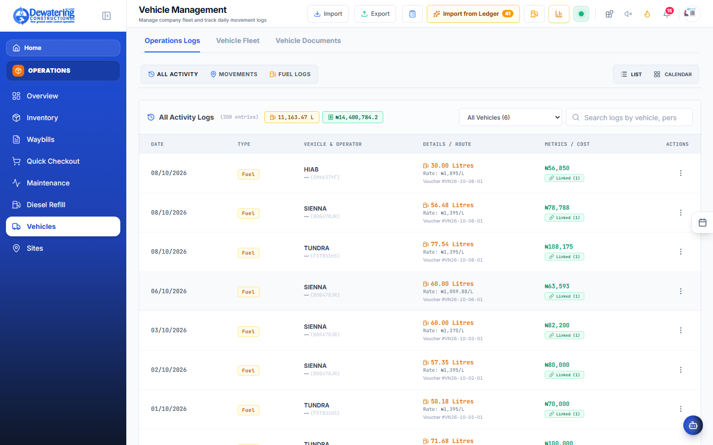
Company: Dewatering Construction Etc. Limited (DCEL)
Who is this for? Site Engineers, Project Managers, and Geotechnical Field Staff
Where to go: In the left menu, click Clients ➔ Client 360 (/client-360)
When a client calls or when you are preparing for a site meeting:
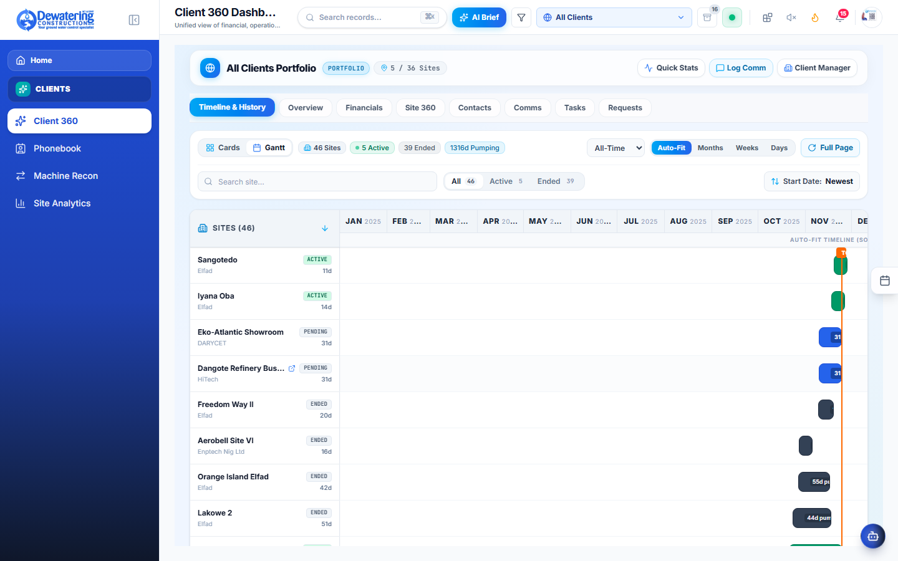
Where to go: In the left menu, click Clients ➔ Phonebook (/clients/phonebook)
When you meet a client engineer, consultant, or subcontractor on site and they give you a paper business card:
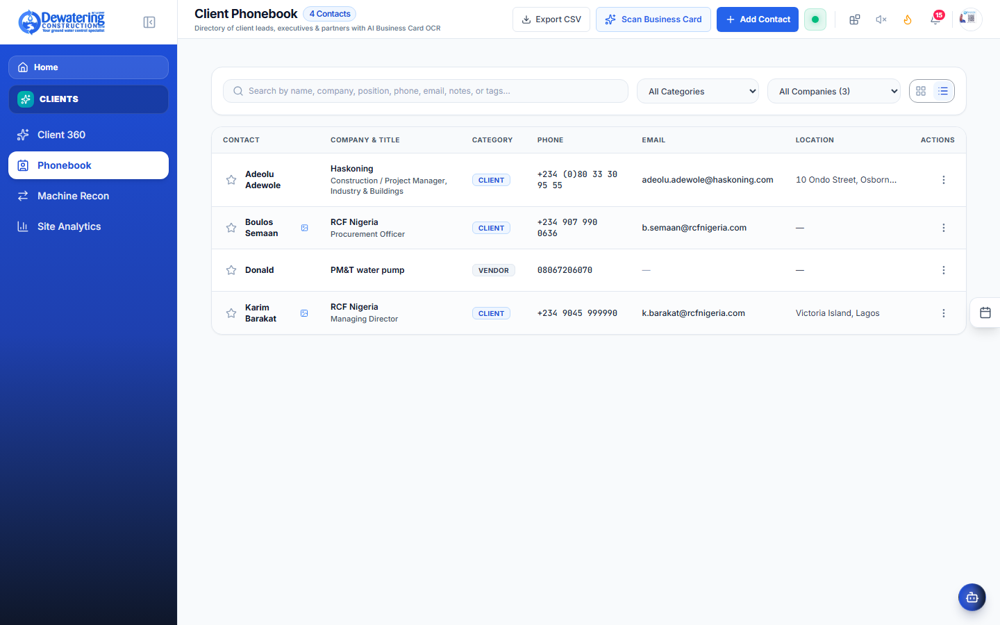
Where to go: In the left menu, click Operations ➔ Sites ➔ Choose your site ➔ Click Site Diary (/sites/diary/:siteId)
Every construction site must submit a daily engineering log. This protects the company legally and ensures project managers know exactly what happened on site.
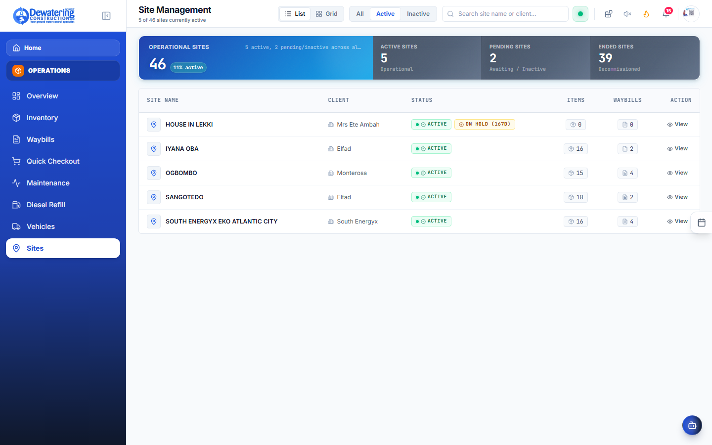
┌─────────────────────────────────────────────────────────────┐
│ DAILY SITE DIARY — Eko Atlantic Marina Basin │
├─────────────────────────────────────────────────────────────┤
│ Date: [ 2026-10-27 ] Weather: [ Sunny / Clear ▼ ] │
│ │
│ GROUNDWATER & EXCAVATION STATUS: │
│ • Initial Water Table: [ -1.20 meters below ground ] │
│ • Current Water Level: [ -6.80 meters below ground ] │
│ • Excavation Depth: [ -6.50 meters formation level ] │
│ • Water Flow Condition: [ Dry & Stable Excavation Bottom ] │
│ │
│ WORK DONE TODAY: │
│ [ 2x 6" pumps operated continuously for 24 hours. Wellpoint │
│ line jetted along southern wall completed today. │
│ Excavator deepened pit by 1.5m without water boiling. ] │
│ │
│ SITE PHOTOS: [ + Take / Attach Photo from Phone ] │
│ │
│ [ Submit Daily Diary ] │
└─────────────────────────────────────────────────────────────┘
Where to go: In the left menu, click Tools ➔ Simulator (/operations/simulator)
The DewaterCAD Simulator allows site engineers to plan an entire groundwater dewatering installation on a site drawing before sending a single pipe to the site.
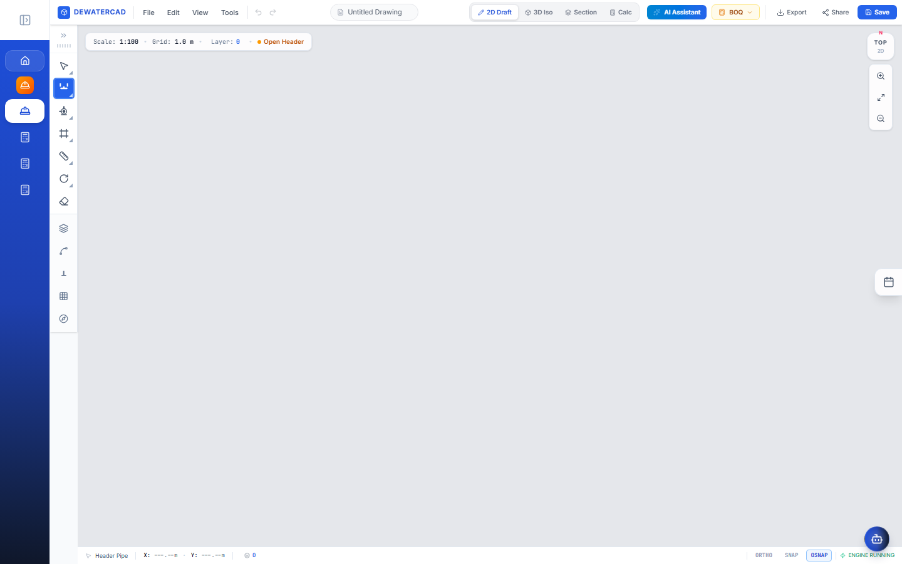
┌────────────────────────────────────────────────────────────────────────────────────────┐
│ DewaterCAD Simulator: Eko Atlantic Basin [ 2D / 3D ] │
├────────────────────────────────────────────────────────────────────────────────────────┤
│ [ + AI Dewatering Assistant ] [ 📐 Calibrate Scale ] [ 💾 Export BOM ] [ 🖨️ PDF ] │
│ │
│ ======================================================================== │
│ || [Pump #1] ─── Header Line (Pipes with Filter Points every 1m) ──────┐ || │
│ || │ || │
│ || ┌────────────────────────────────────────────────────────────┐ │ || │
│ || │ EXCAVATION PIT TO BE DEWATERED │ │ || │
│ || │ Formation Depth: -6.50m │ │ || │
│ || │ Target Water Drawdown: -7.00m │ │ || │
│ || └────────────────────────────────────────────────────────────┘ │ || │
│ || │ || │
│ || ═══ VEHICLE INGRESS RAMP (Clear entrance for dump trucks) ──────────┘ || │
│ ======================================================================== │
│ │
│ SUMMARY: Header: 144m | 6m Pipes: 24 | Pumps: 2x 6" Diesel | 3D View Ready │
└────────────────────────────────────────────────────────────────────────────────────────┘
25 meters). The software now knows the exact real-world dimensions of the drawing.Fill in a few simple questions:
-6.5 meters).-1.2 meters).6 meters). The software will make sure no pipes or pumps block the truck entrance ramp!6m Modular Pipes.Click the blue Generate Dewatering Blueprint button:
Click Export Bill of Materials (BOM):
/operations/dewatering-calculator)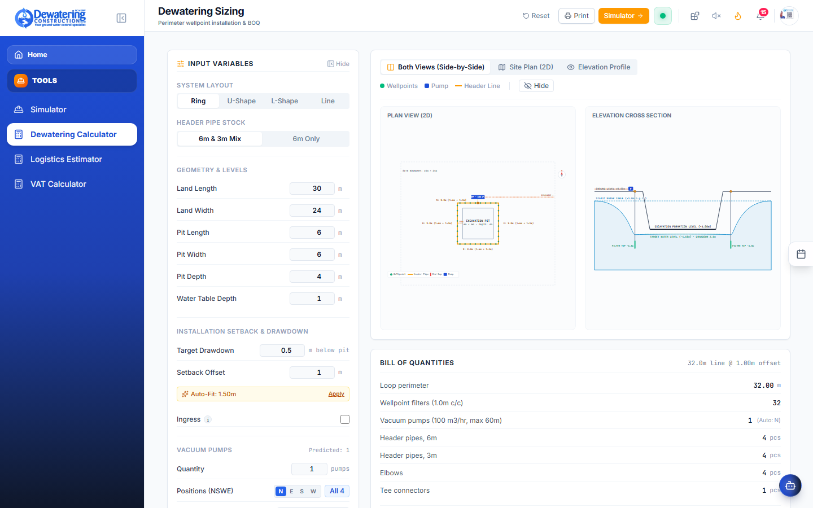
Select your soil type (Sand, Gravel, or Clay), type your excavation depth, and the calculator tells you how many cubic meters of water per hour the pumps must discharge to keep the excavation dry.
/operations/estimator)Type the distance to the job site (e.g. 120 km), choose how many flatbed trucks and cranes are needed, and the app calculates the total transport cost and diesel fuel needed for mobilization.
Company: Dewatering Construction Etc. Limited (DCEL)
Who is this for? All Staff, Project Managers, Supervisors, and Meeting Secretaries
Where to go: In the left menu, click Communication ➔ Task Register (/tasks)
The Task Register keeps everyone on the same page regarding machine repairs, site surveys, payroll deadlines, and client meetings.
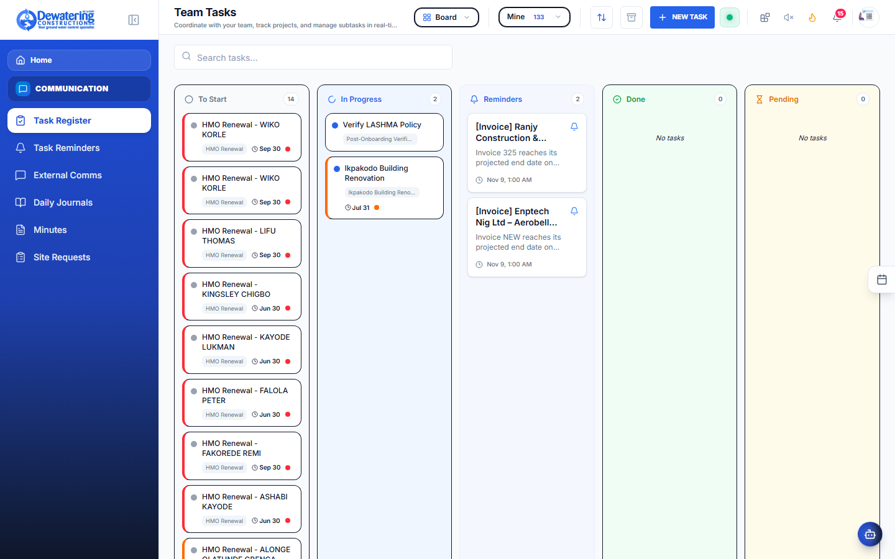
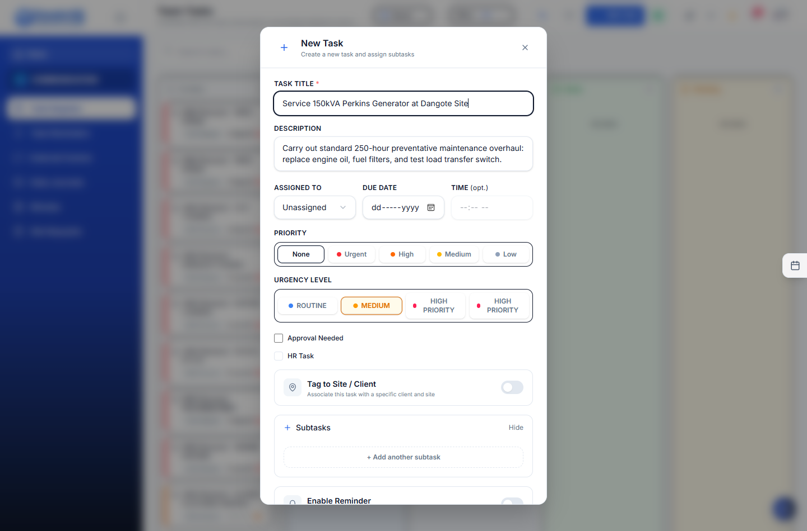
2 of 3 Completed - 67%).
Why is a task marked "Pending Approval"?
Sensitive actions (such as spending company money or decommissioning machinery) require a manager to review and approve the task before it can be closed.
No more lost messages in personal WhatsApp groups! Every task has its own built-in conversation feed.
┌─────────────────────────────────────────────────────────────┐
│ TASK: Overhaul Sykes 6" Pump #004 │
├─────────────────────────────────────────────────────────────┤
│ │
│ [Tunde Adebayo - 10:14 AM] │
│ ┌──────────────────────────────────────────────────────┐ │
│ │ I have opened the pump head. The impeller is worn out│ │
│ │ and needs replacement before we test run. │ │
│ └──────────────────────────────────────────────────────┘ │
│ │
│ [Head of Operations - 10:22 AM] │
│ ┌─────────────────────────────────────────┐ │
│ │ Approved. Collect a new 6" impeller │ │
│ │ from Central Yard Stores Tag #IMP-012. │ │
│ └─────────────────────────────────────────┘ │
│ │
│ [ 📷 Take / Attach Photo ] [ Type your message... ] [▶] │
│└─────────────────────────────────────────────────────────────┘
▶). Everyone assigned to the task sees your message immediately.Where to go: In the left menu, click Communication ➔ Task Reminders (/tasks/reminders)
Have an important deadline coming up, such as submitting attendance by 4:00 PM or renewing truck insurance?
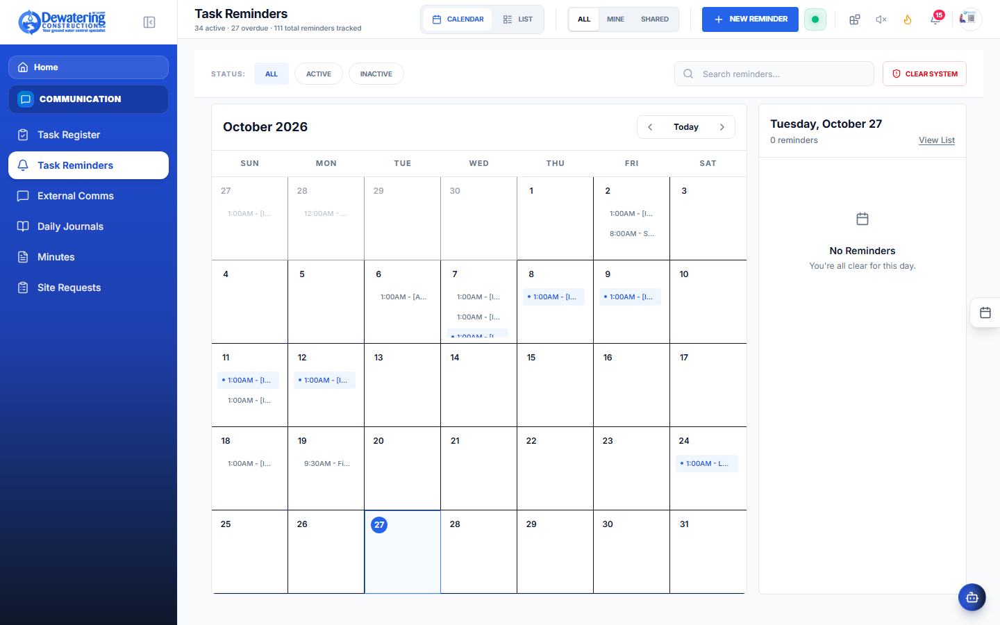
Where to go: In the left menu, click Communication ➔ Minutes (/minutes)
Keep professional records of weekly management meetings, site safety toolbox meetings, or client progress discussions:
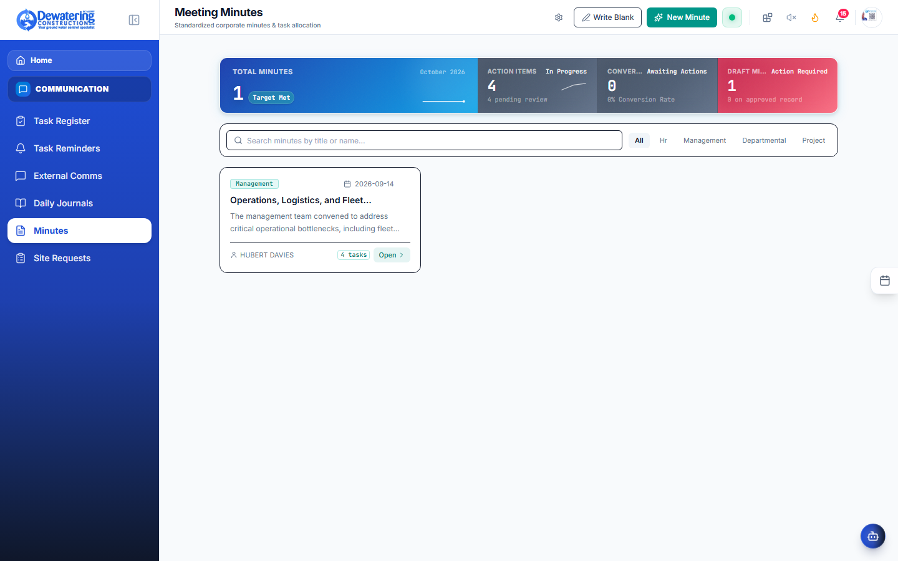
Where to go: In the left menu, click Communication ➔ Site Requests (/operations/site-requests)
When a site engineer runs out of fuel or urgently needs spare fittings:
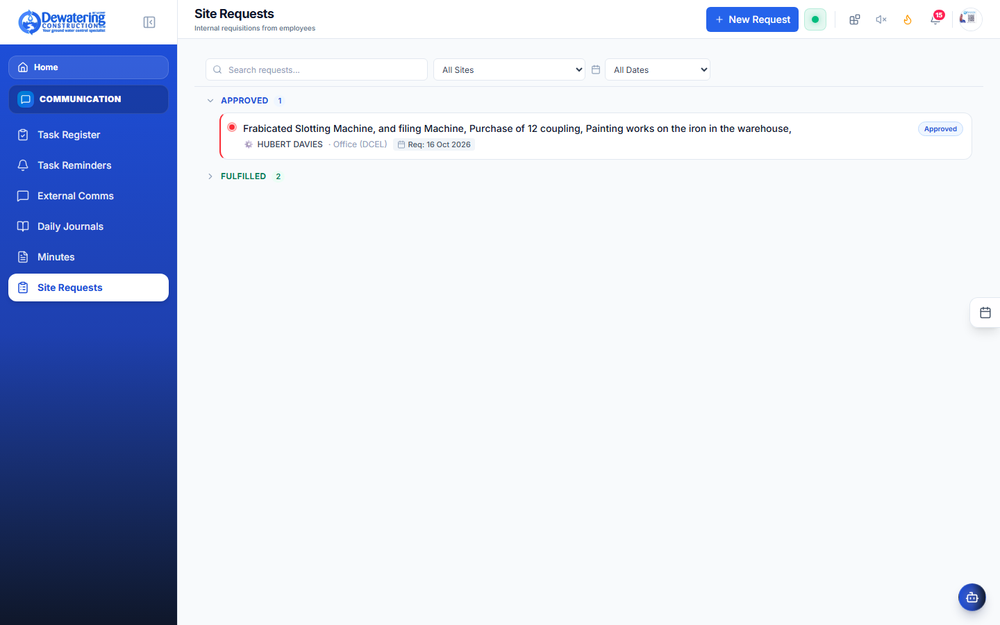
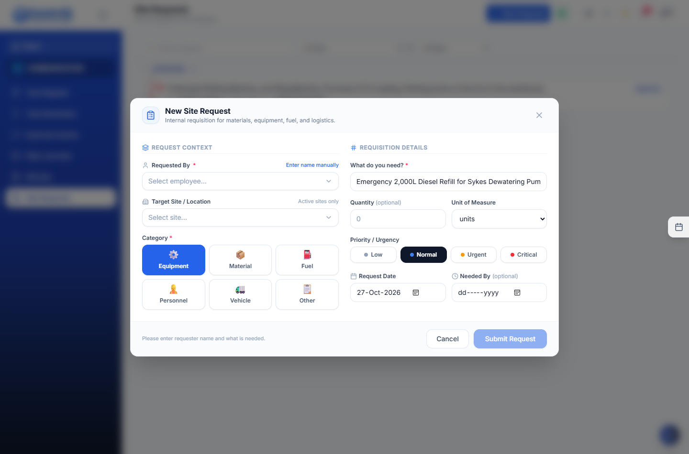
Company: Dewatering Construction Etc. Limited (DCEL)
Who is this for? Managing Directors, Department Leads, and Office Administrators
Where to go: In the left menu, click Reports ➔ Weekly Report (/weekly-report)
Designed specifically for the Managing Director and Department Heads for their Monday morning review:
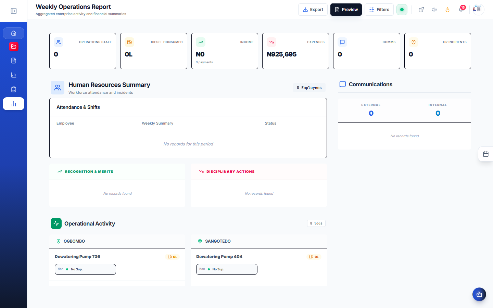
┌────────────────────────────────────────────────────────────────────────────────────────┐
│ DCEL OFFICE SUITE — EXECUTIVE WEEKLY SUMMARY: WEEK 43 (October 2026) │
├────────────────────────────────────────────────────────────────────────────────────────┤
│ 1. OPERATIONS & SITE SITES: │
│ • Total Active Sites: 6 (Eko Atlantic, Lekki Phase 1, Dangote, Victoria Island) │
│ • Total Machine Run-Hours Logged: 1,840 Hours (94.2% Fleet Availability) │
│ • Diesel Consumed: 14,200 Liters (Average 7.7 L/h per active pump) │
│ │
│ 2. COMMERCIAL & MONEY INFLOW: │
│ • Invoices Issued This Week: ₦ 18,500,000.00 │
│ • Client Payments Received: ₦ 12,200,000.00 │
│ • Pending Client Receivables:₦ 46,300,000.00 │
│ │
│ 3. WORKFORCE & SAFETY: │
│ • Total Field Staff: 84 Workers │
│ • Overtime Shifts: 18 Shifts (Sunday emergency foundation pour) │
│ • Safety Record: Zero Accidents or Lost Time Incidents │
├────────────────────────────────────────────────────────────────────────────────────────┤
│ [ Print Executive Summary PDF ] [ Send to Directors by Email ] │
└────────────────────────────────────────────────────────────────────────────────────────┘
/reports)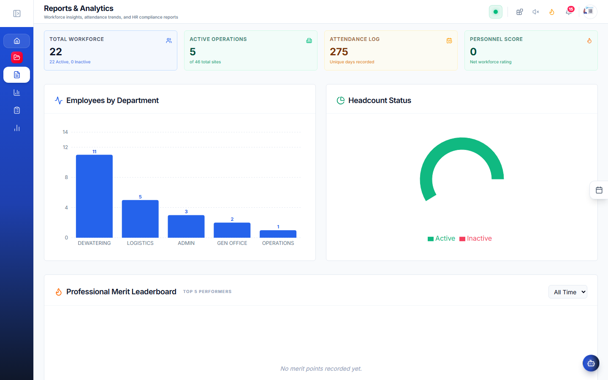
/financial-reports)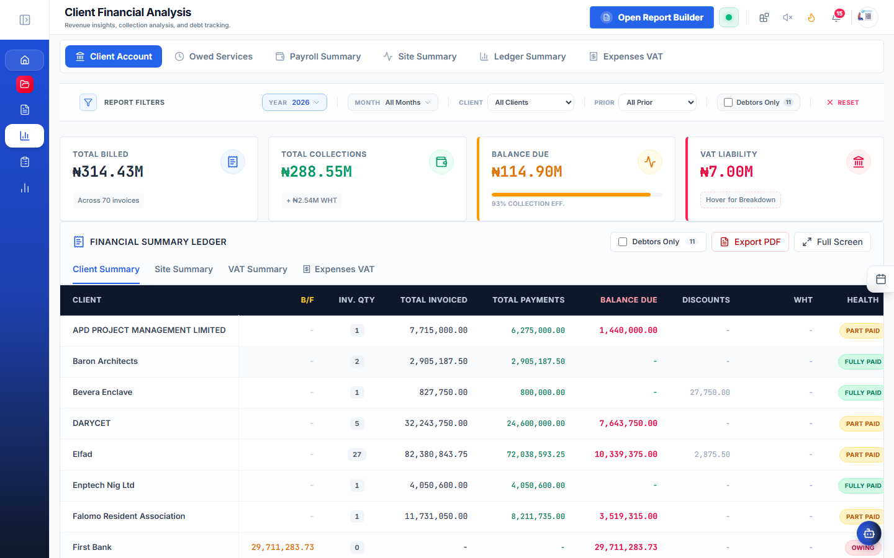
Where to go: In the left menu, click Settings ➔ User Management (/users)
As an administrator, you control who can access the app and which screens each person can see:
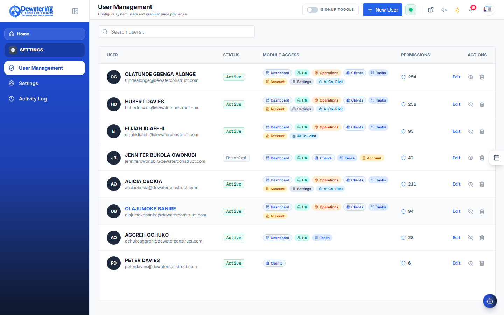
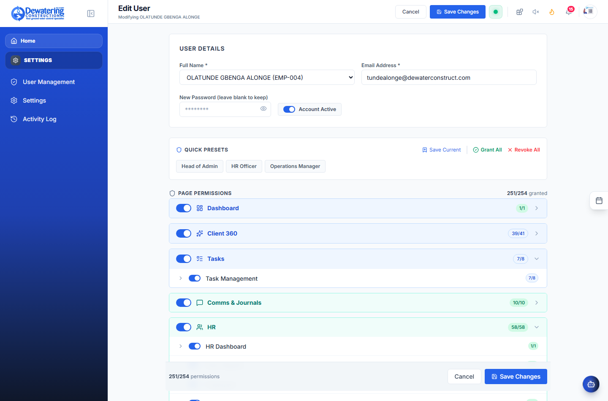
Where to go: In the left menu, click Settings ➔ System Settings (/settings)
Manage corporate parameters, business tax rates, and default workday rules:
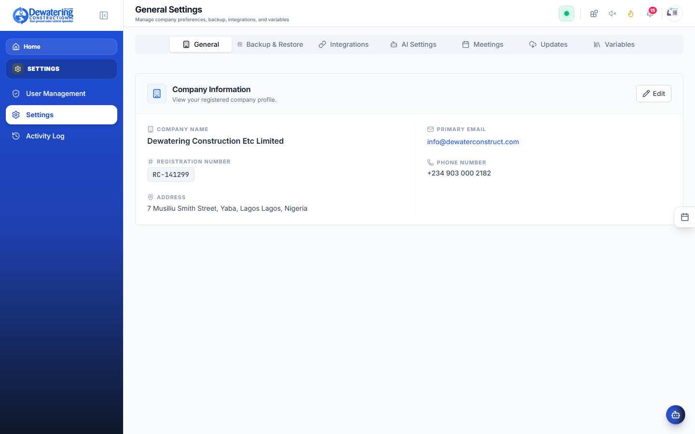
Where to go: In the left menu, click Settings ➔ Activity Log (/activity-log)
Need to know who approved a payment, who edited an attendance record, or when a waybill was issued?
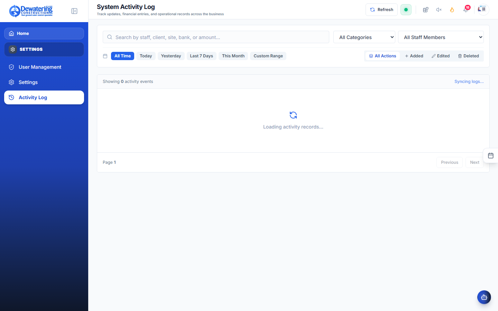
Company: Dewatering Construction Etc. Limited (DCEL)
Who is this for? Any worker needing quick assistance with common issues
| Problem | What Happened? | How to Fix It |
|---|---|---|
| "I forgot my password" | You mistyped or forgot your login password. | On the sign-in screen, click "Forgot your password?" and check your email for the reset link, or contact your HR manager. |
| "Access Denied: Account Inactive" | Your profile was set to inactive. | Ask an administrator in Settings ➔ Users to check the Active Account box on your profile. |
| "I am on a remote site with no phone signal" | No cellular or WiFi connection on site. | Continue entering your daily attendance, site diary, and fuel logs normally. The app saves everything locally on your phone and will upload automatically as soon as you return to an area with signal. |
| "The screen didn't update after I saved" | Your web browser is showing an old cached view. | Press Ctrl + Shift + R on your computer keyboard to refresh the page, or pull down on your phone screen to reload. |
| "I cannot mark a task as Completed" | The task has a "Pending Approval" restriction. | This task involves spending money or moving machinery and requires your manager to sign off first. Ask your department head to approve it. |
| "When printing, the edges of the page are cut off" | Your printer margins are set too wide. | In the printer preview window, change Margins from "Default" to "None" and check the box for "Background Graphics". |
Answer: Salaries for field staff are linked to the official attendance register.
Answer:
Answer: Whenever you see an Attach Photo or Camera button (in Tasks, Site Diaries, or Expenses):
Answer: Yes! DCEL Office Suite works on any Android phone, iPhone, tablet, or home computer. Simply visit the company web link or ask IT for the mobile app installation file.
If you run into any issue that is not answered in this handbook:
/comm-log).